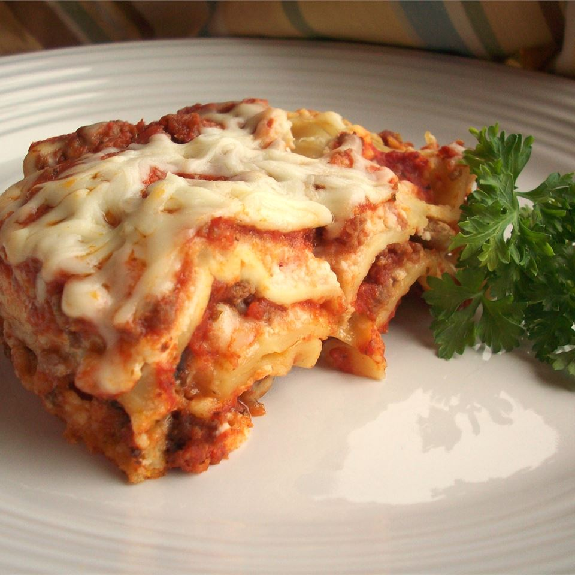

Traditional Lasagna

A traditional lasagna, with about half the time and effort! I always cook extra to have leftovers, but the more I cook, the more they eat!
Serve with garlic toast and salad.
Ingredients
- 1 lb ground beef
- 1 lb Italian Sausage
- 1/2 cup warm water
- 1 cup slived black olives
- 1 pinch basil
- 2 teaspoons garlic powder
- 1 tablespoon dried oregano
- 1 1/2 teaspoons dried sage
- 2 teaspoons ground black pepper
- 2 tablespoons minced garlic
- 1 tablespoon dried onion flakes
- 2 (14 oz0 package lasagna noodles
- 8 oz ricotta cheese
- 1 lb shredded mozzarella cheese
Directions
- Brown the ground beef and Italian sausage in a large skillet over medium-high heat. Drain excess grease. Stir in the water and black
olives, and season with basil, garlic powder, oregano, sage, pepper, minced garlic, and onion flakes. Simmer for about 15 minutes,
stirring frequently. Stir in the marinara sauce, and remove from the heat.
- Preheat the oven to 375 degrees F (190 degrees C).
- Place a layer of the meat and sauce in the bottom of a 9x13 inch baking dish. Cover with a layer of dry noodles. Spread a thin layer
of ricotta cheese over the noodles, and sprinkle with a little mozzarella cheese. Cover with another layer of sauce, and repeat
layering ending with the meat and sauce on top. Reserve about 1/2 cup of mozzarella cheese for later.
Source: allrecipes.com